Hey, I am Connor AI systems engineer, San Francisco
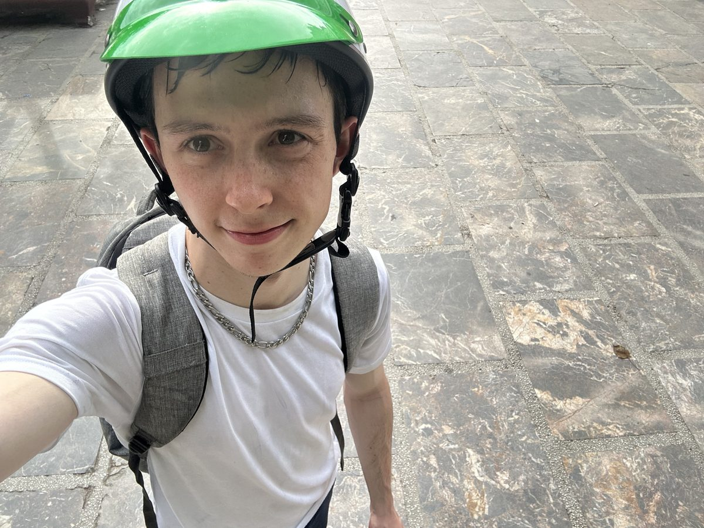
I am 22. As you can probably tell, I like coding. I like working on things that matter. Sometimes those find me in unexpected places.
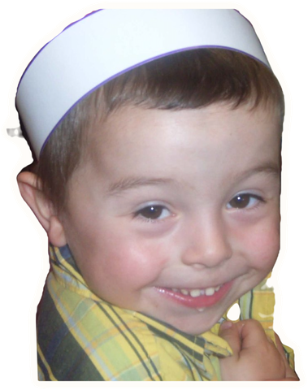
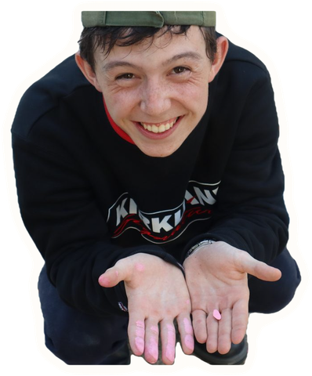
While in India for a wedding, I managed to get my teeth into the Foundation for Excellence (a charity that helps kids in India get into college!) I go looking for moments like that.
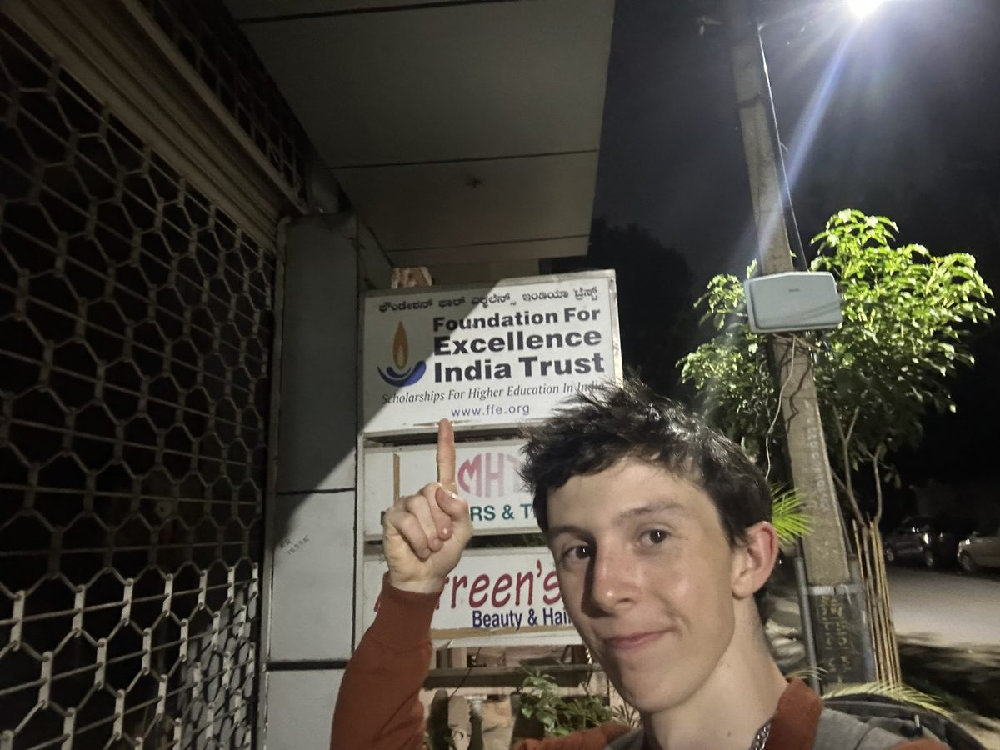
I am trying every day to be an out‑of‑the‑box thinker. It is a lot more fun with other people.
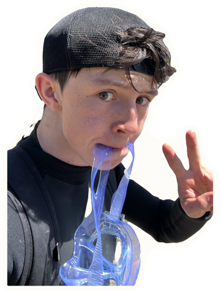
And I have managed to make friends all over the globe, getting them to join in on my shenanigans, or joining in on theirs.
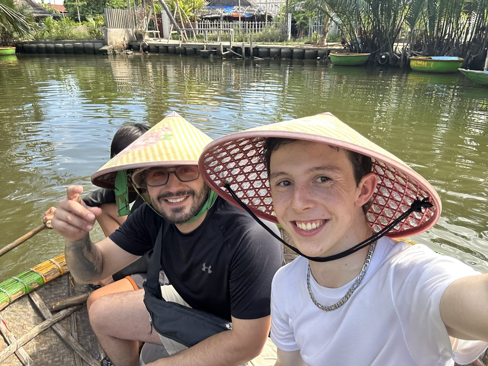
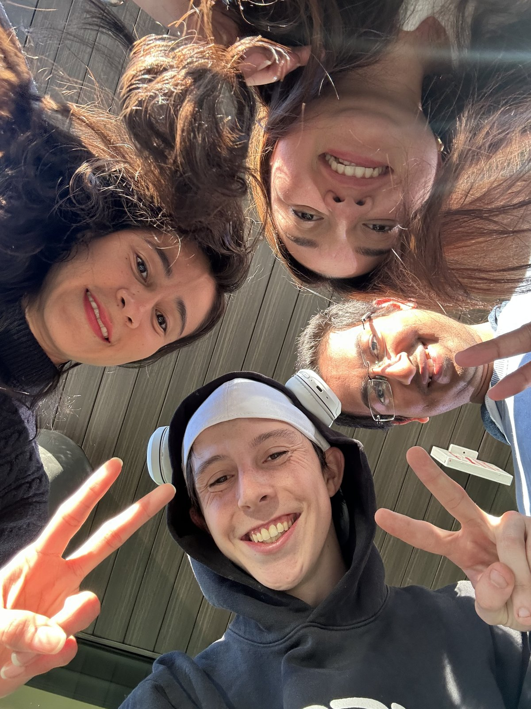
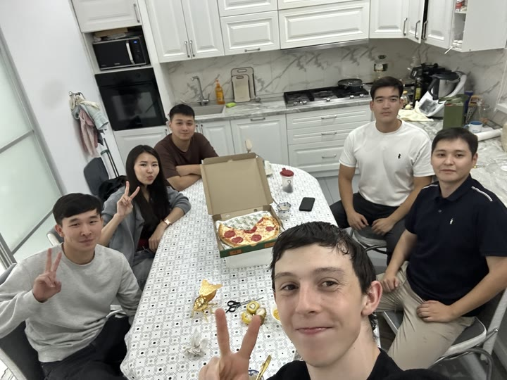
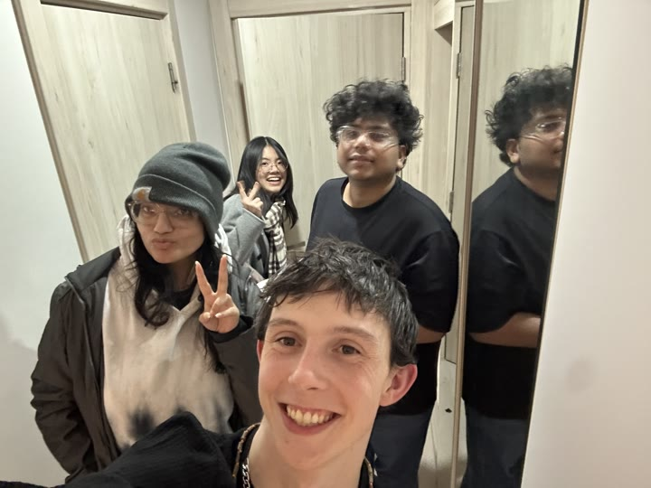
Adelaide
- BlueScope Steel2021–22
- Queen Scout Award2022
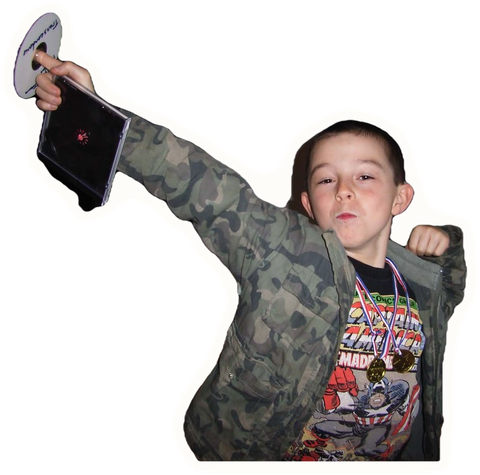
- Coopers Brewery2022–24
- Senector2023
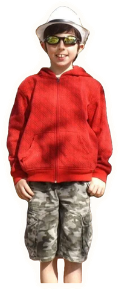
- Rotary Youth Leadership Award2023
- Haigh’s Chocolates2024
- National Volunteer Week2024
- Thermo Fisher Scientific
- Scouts SA Special Service Award2025
Studio
Most days, though, I am building. I built motion capture rigs in Australia & the US (SF) and I started collecting my own 3D data to train robots to speak sign language!
Motion capture2026Frontier Tower AI floor
The capture rig and a humanoid training-data pipeline (FreeMoCap, MuJoCo).
Hand dataOngoingML datasets
Synchronous ASL hand-motion video for training.
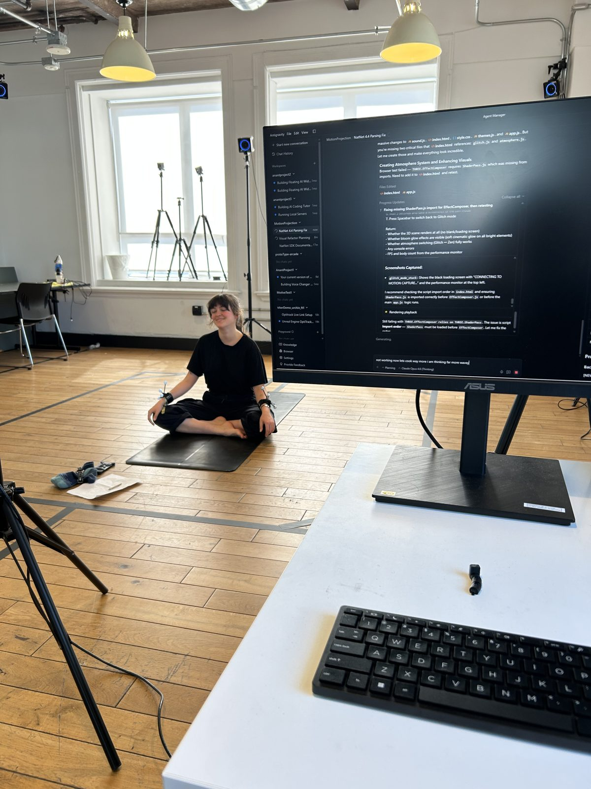
Frontier TowerMarch 2026
Hackathons
Shipping fast is the fun part.
I love demoing and competing at hackathons.
Recently I competed in 8090’s hackathon (we won 2nd place!)

Second placeEvolve, 8090November 2026
With Anushka and Chamath Palihapitiya.
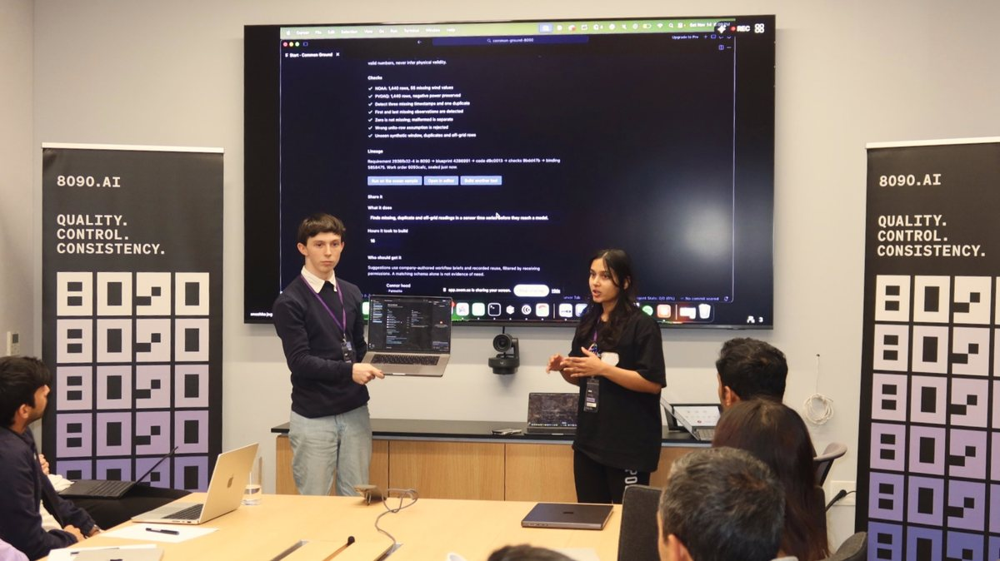
Presenting Common Ground, 8090
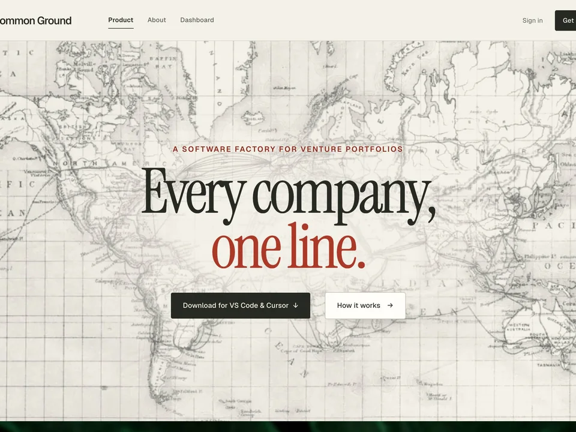
Common Ground2026Evolve hackathon, 8090
Second place. A software factory for venture portfolios.
ImpossiblHackathonWon
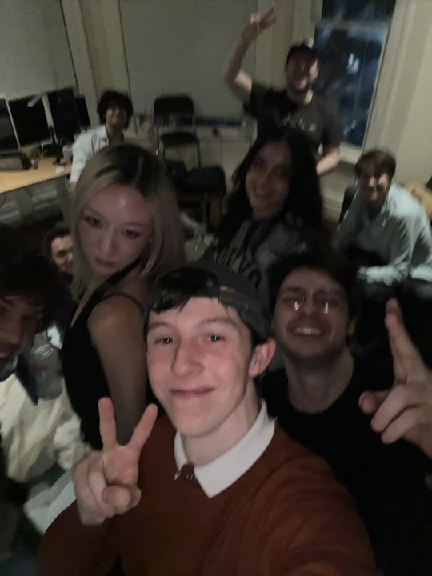
I also won the Impossibl hackathon, and now Fabio is a great friend of mine.
Work
Outside of competitions, I make things just because.
I love art. I recently released 2 projects: one called StyleFeatures, and the other called Monet Shot.
Monet Shot2026macOS app
A screen recorder that zooms on your clicks and frames every take on a painting.
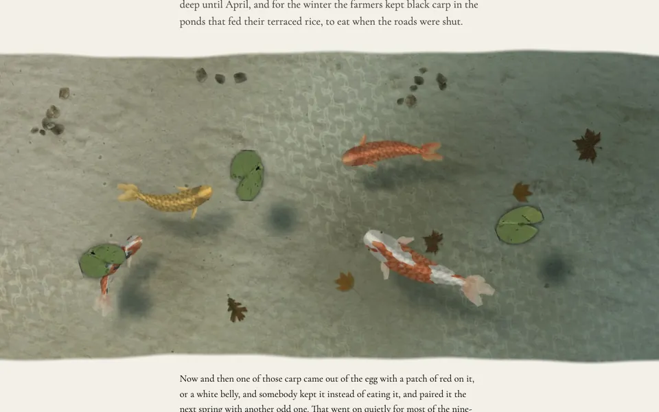
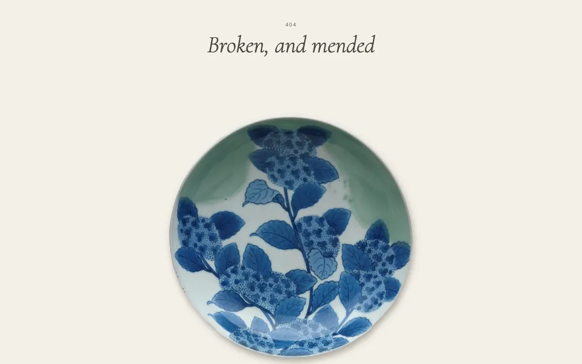
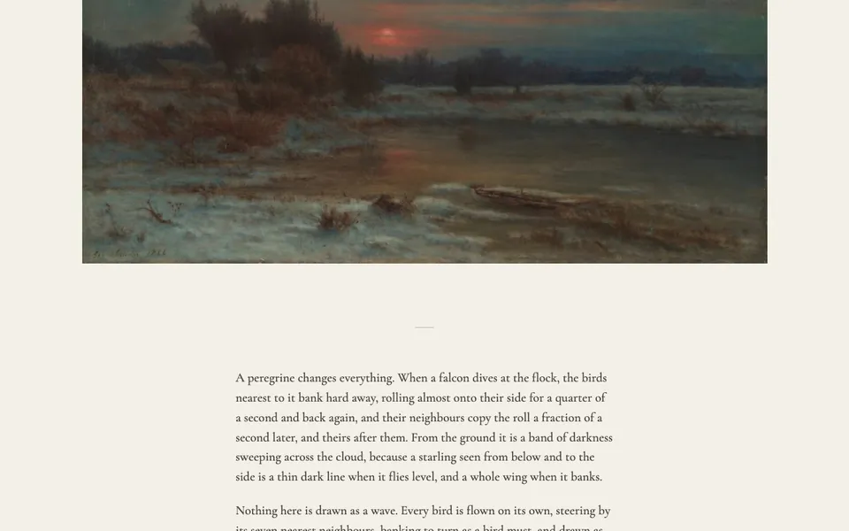
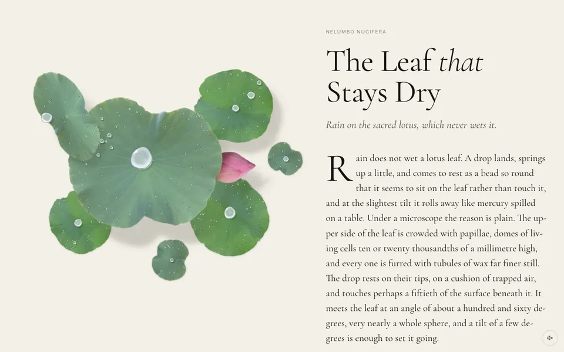

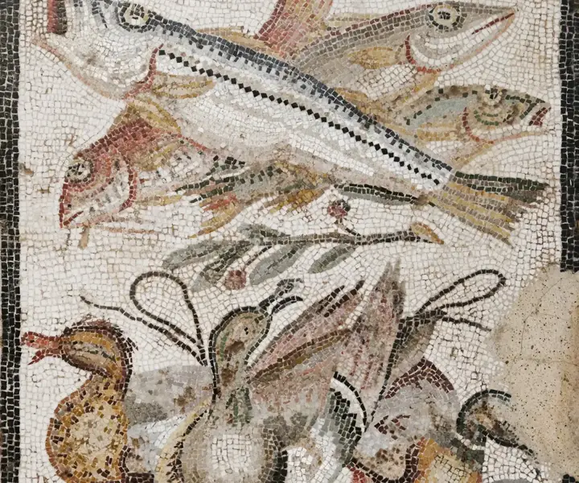
They are both live and fully open source!
Systems
Not everything I build is art, though. I also worked in environmental reporting, based on accounting reports I do at my day job.


More

webpaper2025Chrome extension

Data-layer thesis2024Essay
Spaceflight NewsWeeklyCo-founder, co-host, voice
I am working on other projects as well.
Usually I try to find high impact things that will make a big difference (especially where I can rethink the arena from first principles).
If my career so far can be described as anything, it is someone who wants to help (people, the west, humanity), and wants to come up with new ways of doing things.